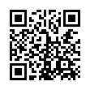
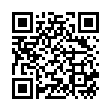
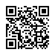

Der Online-Treff der Hobbybrauer Muenster
Mit freundlicher Unterstützung von Workadventu.re
Zugang per Rechner
Bitte nutze das Angebot bevorzugt mit einem Notebook oder Computer mit Webcam. Getestet ist es mit den Browsern Chrome und Firefox. Bei Problemen nutze bitte einen von diesen. Du musst keine spezielle Konferenzsoftware installieren. Der Zugang ohne Webcam ist möglich.
Bitte klicke hier um den Online-Pub zu betreten:
Zugang mit einem Mobilgerät
Ein Zugang zur Spielwelt ist grundsätzlich mit einem Tablet oder Handy nicht möglich - eventuell funktioniert es, wenn du eine externe Tastatur per Kabel oder Bluetooth angeschlossen hast. Sollte dir nichts Anderes zur Verfügung stehen, kannst du leider "nur" in die drei Konzerenzräume und nicht an spontanen Gesprächsrunden teilnehmen. Nutze die folgenden Links um in die drei Konferenzbereich zu kommen. Sollte sich dort kein Braufreund aus der Spielwelt aufhalten, wird die Meldung erscheinen, dass auf einen Moderator/Administrator gewartet wird. Versuche es dann einfach mit einem der anderen Räumen.
Die Räume
Theke
Die Theke dient dem Allgemeinen "Klatsch und Tratsch" von mehr als 4 Braufreunden - hier ist bewusst kein Thema vorgegeben.
Braufreunde mit Mobilgerät klicken oder scannen hier: https://coremeet.workadventu.re/bfms-theke
Kaminzimmer
Das Kaminzimmer ist reserviert für Vorträge und Fachthemen. Wenn sich zu einem speziellen Thema besprochen werden oder gar etwas gezeigt werden soll, geht das hier.
Braufreunde mit Mobilgerät klicken oder scannen hier: https://coremeet.workadventu.re/bfms-kaminzimmer
Hobbybrauecke
Die Hobybrauecke befindet sich ganz rechts ("im Osten") auf der Karte. Ältere Menschen, die sich noch an die Zeit erinnern können, in der man sich im echten Leben in sogenannten "Kneipen" traf, werden sich vielleicht noch daran erinnern und den Grundriss wieder erkennen. Du bist eine neue Braufreundin oder Braufreund und hast Fragen zum Verein oder deinem ersten Sud? Dann ist hier der richtige Ort. Auch Braufreunde, die sich über ein spezielles Thema spontan besprechen wollen, treffen sich hier.
Braufreunde mit Mobilgerät klicken oder scannen hier: https://coremeet.workadventu.re/bfms-hobbybrauecke